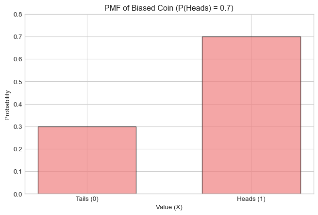
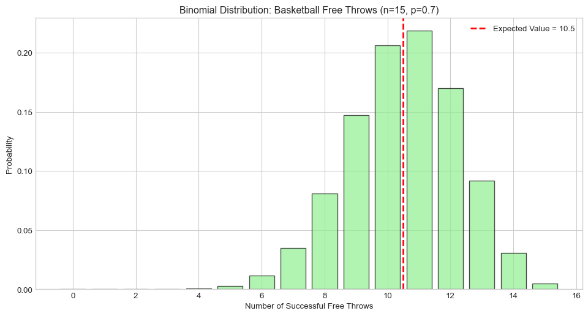
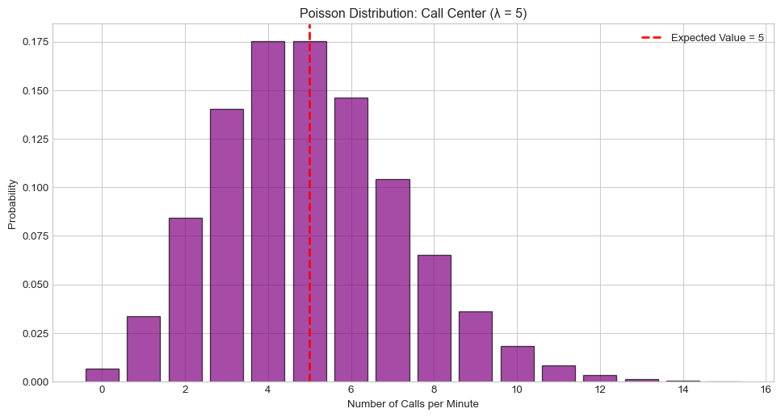
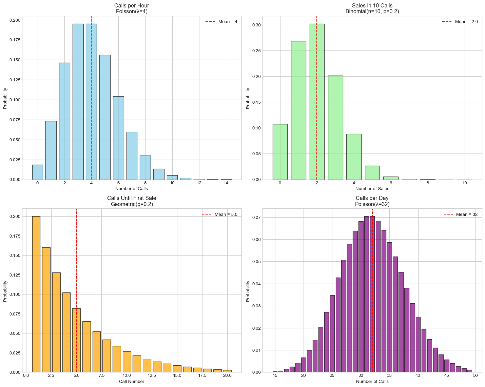

import numpy as np
import matplotlib.pyplot as plt
from scipy import stats
import pandas as pd
# Set up plotting
%matplotlib inline
plt.style.use('seaborn-v0_8-whitegrid')Lab 4 Solutions: Discrete Random Variables and Distributions
PSTAT 5A - Summer Session A 2025
Setup
Task 1 Solution
Problem: Consider a biased coin where P(Heads) = 0.7 and P(Tails) = 0.3. Let X be a random variable where X = 1 for Heads and X = 0 for Tails.
# Task 1 Solution
# 1. Create lists for values and probabilities
coin_values = [0, 1] # 0 for Tails, 1 for Heads
coin_probabilities = [0.3, 0.7] # P(Tails) = 0.3, P(Heads) = 0.7
print("Coin Values (X):", coin_values)
print("Probabilities:", coin_probabilities)
# 2. Verify probabilities sum to 1
prob_sum = sum(coin_probabilities)
print(f"Sum of probabilities: {prob_sum}")
print(f"Probabilities sum to 1: {prob_sum == 1.0}")
# 3. Create bar plot
plt.figure(figsize=(8, 5))
plt.bar(coin_values, coin_probabilities, alpha=0.7, color='lightcoral', edgecolor='black', width=0.6)
plt.xlabel('Value (X)')
plt.ylabel('Probability')
plt.title('PMF of Biased Coin (P(Heads) = 0.7)')
plt.xticks([0, 1], ['Tails (0)', 'Heads (1)'])
plt.ylim(0, 0.8)
plt.show()Coin Values (X): [0, 1]
Probabilities: [0.3, 0.7]
Sum of probabilities: 1.0
Probabilities sum to 1: True
Task 2 Solution
Problem: Calculate the expected value and variance for the biased coin from Task 1.
# Task 2 Solution
# Expected value calculation: E[X] = Σ k * P(X = k)
expected_value = sum(k * p for k, p in zip(coin_values, coin_probabilities))
print(f"Expected value E[X]: {expected_value}")
# Step-by-step calculation
print("\nStep-by-step calculation:")
print(f"E[X] = 0 × P(X=0) + 1 × P(X=1)")
print(f"E[X] = 0 × 0.3 + 1 × 0.7 = {0*0.3 + 1*0.7}")
# Variance calculation: Var(X) = E[X²] - (E[X])²
# First calculate E[X²]
expected_x_squared = sum(k**2 * p for k, p in zip(coin_values, coin_probabilities))
variance = expected_x_squared - expected_value**2
print(f"\nVariance calculation:")
print(f"E[X²] = 0² × 0.3 + 1² × 0.7 = {0**2 * 0.3 + 1**2 * 0.7}")
print(f"Var(X) = E[X²] - (E[X])² = {expected_x_squared} - ({expected_value})² = {variance}")
print(f"Standard deviation: {np.sqrt(variance):.4f}")
# Verify using theoretical formula for Bernoulli: Var(X) = p(1-p)
theoretical_variance = 0.7 * (1 - 0.7)
print(f"\nVerification using Bernoulli formula: Var(X) = p(1-p) = 0.7 × 0.3 = {theoretical_variance}")Expected value E[X]: 0.7
Step-by-step calculation:
E[X] = 0 × P(X=0) + 1 × P(X=1)
E[X] = 0 × 0.3 + 1 × 0.7 = 0.7
Variance calculation:
E[X²] = 0² × 0.3 + 1² × 0.7 = 0.7
Var(X) = E[X²] - (E[X])² = 0.7 - (0.7)² = 0.21000000000000002
Standard deviation: 0.4583
Verification using Bernoulli formula: Var(X) = p(1-p) = 0.7 × 0.3 = 0.21000000000000002Task 3 Solution
Problem: A basketball player makes 70% of their free throws. They take 15 free throws.
# Task 3 Solution
# This is a binomial distribution with n=15, p=0.7
n = 15
p = 0.7
binom = stats.binom(n, p)
# 1. Probability of making exactly 10 free throws
prob_exactly_10 = binom.pmf(10)
print(f"1. P(X = 10) = {prob_exactly_10:.4f}")
# 2. Probability of making at least 12 free throws
prob_at_least_12 = 1 - binom.cdf(11) # P(X ≥ 12) = 1 - P(X ≤ 11)
# Alternative: prob_at_least_12 = sum(binom.pmf(k) for k in range(12, 16))
print(f"2. P(X ≥ 12) = {prob_at_least_12:.4f}")
# 3. Expected number of free throws made
expected_makes = binom.mean()
print(f"3. Expected number of makes: {expected_makes}")
print(f" (Theoretical: n×p = {n}×{p} = {n*p})")
# 4. Create bar plot showing PMF
k_values = range(0, n+1)
probabilities = [binom.pmf(k) for k in k_values]
plt.figure(figsize=(12, 6))
plt.bar(k_values, probabilities, alpha=0.7, color='lightgreen', edgecolor='black')
plt.xlabel('Number of Successful Free Throws')
plt.ylabel('Probability')
plt.title(f'Binomial Distribution: Basketball Free Throws (n={n}, p={p})')
plt.axvline(x=expected_makes, color='red', linestyle='--', linewidth=2, label=f'Expected Value = {expected_makes}')
plt.legend()
plt.show()
print(f"\nSummary Statistics:")
print(f"Mean: {binom.mean()}")
print(f"Variance: {binom.var()}")
print(f"Standard Deviation: {binom.std():.4f}")1. P(X = 10) = 0.2061
2. P(X ≥ 12) = 0.2969
3. Expected number of makes: 10.5
(Theoretical: n×p = 15×0.7 = 10.5)
Summary Statistics:
Mean: 10.5
Variance: 3.1500000000000012
Standard Deviation: 1.7748Task 4 Solution
Problem: A call center receives an average of 5 calls per minute.
# Task 4 Solution
# This is a Poisson distribution with λ = 5
lam = 5
poisson = stats.poisson(lam)
# 1. Probability of receiving exactly 7 calls
prob_exactly_7 = poisson.pmf(7)
print(f"1. P(X = 7) = {prob_exactly_7:.4f}")
# 2. Probability of receiving no calls
prob_no_calls = poisson.pmf(0)
print(f"2. P(X = 0) = {prob_no_calls:.4f}")
# 3. Probability of receiving more than 8 calls
prob_more_than_8 = 1 - poisson.cdf(8) # P(X > 8) = 1 - P(X ≤ 8)
print(f"3. P(X > 8) = {prob_more_than_8:.4f}")
# 4. Plot PMF for k = 0 to 15
k_values = range(0, 16)
probabilities = [poisson.pmf(k) for k in k_values]
plt.figure(figsize=(12, 6))
plt.bar(k_values, probabilities, alpha=0.7, color='purple', edgecolor='black')
plt.xlabel('Number of Calls per Minute')
plt.ylabel('Probability')
plt.title(f'Poisson Distribution: Call Center (λ = {lam})')
plt.axvline(x=lam, color='red', linestyle='--', linewidth=2, label=f'Expected Value = {lam}')
plt.legend()
plt.show()
print(f"\nSummary Statistics:")
print(f"Expected value (λ): {poisson.mean()}")
print(f"Variance (λ): {poisson.var()}")
print(f"Standard Deviation: {poisson.std():.4f}")1. P(X = 7) = 0.1044
2. P(X = 0) = 0.0067
3. P(X > 8) = 0.0681
Summary Statistics:
Expected value (λ): 5.0
Variance (λ): 5.0
Standard Deviation: 2.2361Task 5 Solution
Problem: Distribution Identification Practice
# Task 5 Solutions
print("=== SCENARIO A ===")
print("Flip a fair coin 20 times. Probability of exactly 12 heads?")
print("Distribution: Binomial(n=20, p=0.5)")
n_a = 20
p_a = 0.5
binom_a = stats.binom(n_a, p_a)
prob_a = binom_a.pmf(12)
print(f"Answer: P(X = 12) = {prob_a:.4f}")
print("\n=== SCENARIO B ===")
print("Roll a die until you get a 6. Probability it takes exactly 4 rolls?")
print("Distribution: Geometric(p=1/6)")
p_b = 1/6
geom_b = stats.geom(p_b)
prob_b = geom_b.pmf(4)
print(f"Answer: P(X = 4) = {prob_b:.4f}")
print("\n=== SCENARIO C ===")
print("Website gets average 2 visitors per minute. Probability of exactly 3 visitors?")
print("Distribution: Poisson(λ=2)")
lam_c = 2
poisson_c = stats.poisson(lam_c)
prob_c = poisson_c.pmf(3)
print(f"Answer: P(X = 3) = {prob_c:.4f}")
print("\n=== SCENARIO D ===")
print("5% of items are defective. Probability first defective item found on 8th test?")
print("Distribution: Geometric(p=0.05)")
p_d = 0.05
geom_d = stats.geom(p_d)
prob_d = geom_d.pmf(8)
print(f"Answer: P(X = 8) = {prob_d:.4f}")=== SCENARIO A ===
Flip a fair coin 20 times. Probability of exactly 12 heads?
Distribution: Binomial(n=20, p=0.5)
Answer: P(X = 12) = 0.1201
=== SCENARIO B ===
Roll a die until you get a 6. Probability it takes exactly 4 rolls?
Distribution: Geometric(p=1/6)
Answer: P(X = 4) = 0.0965
=== SCENARIO C ===
Website gets average 2 visitors per minute. Probability of exactly 3 visitors?
Distribution: Poisson(λ=2)
Answer: P(X = 3) = 0.1804
=== SCENARIO D ===
5% of items are defective. Probability first defective item found on 8th test?
Distribution: Geometric(p=0.05)
Answer: P(X = 8) = 0.0349Task 6 Solution
Problem: Simulation of basketball free throw scenario
# Task 6 Solution
np.random.seed(42) # For reproducible results
# Parameters from Task 3
n_shots = 15
p_success = 0.7
n_simulations = 1000
# Theoretical probability of exactly 10 makes
theoretical_prob = stats.binom(n_shots, p_success).pmf(10)
print(f"Theoretical P(X = 10): {theoretical_prob:.4f}")
# Simulate the scenario 1000 times
simulation_results = []
exactly_10_count = 0
for i in range(n_simulations):
# Simulate 15 free throws (1 = make, 0 = miss)
shots = np.random.binomial(1, p_success, n_shots)
makes = np.sum(shots)
simulation_results.append(makes)
if makes == 10:
exactly_10_count += 1
# Calculate proportion of simulations with exactly 10 makes
simulated_prob = exactly_10_count / n_simulations
print(f"Simulated P(X = 10): {simulated_prob:.4f}")
print(f"Difference: {abs(theoretical_prob - simulated_prob):.4f}")
# Create histogram with theoretical PMF overlay
plt.figure(figsize=(14, 8))
# Histogram of simulation results
plt.hist(simulation_results, bins=range(0, n_shots+2), alpha=0.7, density=True,
color='lightblue', edgecolor='black', label='Simulation Results')
# Theoretical PMF overlay
binom_theory = stats.binom(n_shots, p_success)
k_values = range(0, n_shots+1)
theoretical_probs = [binom_theory.pmf(k) for k in k_values]
plt.plot(k_values, theoretical_probs, 'ro-', linewidth=2, markersize=8,
label='Theoretical PMF')
plt.xlabel('Number of Successful Free Throws')
plt.ylabel('Probability/Density')
plt.title(f'Simulation vs Theory: Basketball Free Throws\n({n_simulations} simulations, n={n_shots}, p={p_success})')
plt.legend()
plt.grid(True, alpha=0.3)
plt.show()
print(f"\nSimulation Summary:")
print(f"Mean of simulations: {np.mean(simulation_results):.2f}")
print(f"Theoretical mean: {binom_theory.mean():.2f}")
print(f"Standard deviation of simulations: {np.std(simulation_results):.2f}")
print(f"Theoretical standard deviation: {binom_theory.std():.2f}")Theoretical P(X = 10): 0.2061
Simulated P(X = 10): 0.2150
Difference: 0.0089
Simulation Summary:
Mean of simulations: 10.59
Theoretical mean: 10.50
Standard deviation of simulations: 1.74
Theoretical standard deviation: 1.77Final Challenge Solution
Problem: Customer service center analysis
# Final Challenge Solution
print("=== CUSTOMER SERVICE CENTER ANALYSIS ===\n")
# Given information:
# - 20% of calls result in a sale (Bernoulli process)
# - Calls arrive at average rate of 4 per hour (Poisson process)
# - Agents work until first sale (Geometric process)
p_sale = 0.2 # Probability of sale per call
calls_per_hour = 4
hours_per_day = 8
print("Given:")
print(f"- Probability of sale per call: {p_sale}")
print(f"- Average calls per hour: {calls_per_hour}")
print(f"- Hours of operation per day: {hours_per_day}")
# 1. Expected number of calls in 8-hour day
expected_calls_per_day = calls_per_hour * hours_per_day
print(f"\n1. Expected calls in {hours_per_day}-hour day: {expected_calls_per_day}")
# 2. Probability that exactly 2 of next 10 calls result in sales
n_calls = 10
binom_sales = stats.binom(n_calls, p_sale)
prob_2_sales = binom_sales.pmf(2)
print(f"\n2. P(exactly 2 sales in 10 calls): {prob_2_sales:.4f}")
# 3. Expected number of calls until first sale
geom_first_sale = stats.geom(p_sale)
expected_calls_until_sale = geom_first_sale.mean()
print(f"\n3. Expected calls until first sale: {expected_calls_until_sale:.1f}")
# 4. Comprehensive visualization
fig, axes = plt.subplots(2, 2, figsize=(15, 12))
# Plot 1: Poisson - Calls per hour
poisson_calls = stats.poisson(calls_per_hour)
k_poisson = range(0, 15)
prob_poisson = [poisson_calls.pmf(k) for k in k_poisson]
axes[0, 0].bar(k_poisson, prob_poisson, alpha=0.7, color='skyblue', edgecolor='black')
axes[0, 0].set_title(f'Calls per Hour\nPoisson(λ={calls_per_hour})')
axes[0, 0].set_xlabel('Number of Calls')
axes[0, 0].set_ylabel('Probability')
axes[0, 0].axvline(x=calls_per_hour, color='red', linestyle='--', label=f'Mean = {calls_per_hour}')
axes[0, 0].legend()
# Plot 2: Binomial - Sales in 10 calls
k_binom = range(0, n_calls + 1)
prob_binom = [binom_sales.pmf(k) for k in k_binom]
axes[0, 1].bar(k_binom, prob_binom, alpha=0.7, color='lightgreen', edgecolor='black')
axes[0, 1].set_title(f'Sales in {n_calls} Calls\nBinomial(n={n_calls}, p={p_sale})')
axes[0, 1].set_xlabel('Number of Sales')
axes[0, 1].set_ylabel('Probability')
axes[0, 1].axvline(x=binom_sales.mean(), color='red', linestyle='--',
label=f'Mean = {binom_sales.mean():.1f}')
axes[0, 1].legend()
# Plot 3: Geometric - Calls until first sale
k_geom = range(1, 21)
prob_geom = [geom_first_sale.pmf(k) for k in k_geom]
axes[1, 0].bar(k_geom, prob_geom, alpha=0.7, color='orange', edgecolor='black')
axes[1, 0].set_title(f'Calls Until First Sale\nGeometric(p={p_sale})')
axes[1, 0].set_xlabel('Call Number')
axes[1, 0].set_ylabel('Probability')
axes[1, 0].axvline(x=expected_calls_until_sale, color='red', linestyle='--',
label=f'Mean = {expected_calls_until_sale:.1f}')
axes[1, 0].legend()
# Plot 4: Poisson - Calls per day
poisson_day = stats.poisson(expected_calls_per_day)
k_day = range(15, 50) # Focus on reasonable range around mean
prob_day = [poisson_day.pmf(k) for k in k_day]
axes[1, 1].bar(k_day, prob_day, alpha=0.7, color='purple', edgecolor='black')
axes[1, 1].set_title(f'Calls per Day\nPoisson(λ={expected_calls_per_day})')
axes[1, 1].set_xlabel('Number of Calls')
axes[1, 1].set_ylabel('Probability')
axes[1, 1].axvline(x=expected_calls_per_day, color='red', linestyle='--',
label=f'Mean = {expected_calls_per_day}')
axes[1, 1].legend()
plt.tight_layout()
plt.show()
# Additional insights
print(f"\n=== ADDITIONAL INSIGHTS ===")
print(f"Daily sales expectations:")
expected_daily_sales = expected_calls_per_day * p_sale
print(f"- Expected calls per day: {expected_calls_per_day}")
print(f"- Expected sales per day: {expected_daily_sales:.1f}")
print(f"\nProbability calculations:")
print(f"- P(no sales in 10 calls): {binom_sales.pmf(0):.4f}")
print(f"- P(at least 1 sale in 10 calls): {1 - binom_sales.pmf(0):.4f}")
print(f"- P(first sale on call 1): {geom_first_sale.pmf(1):.4f}")
print(f"- P(first sale within 5 calls): {geom_first_sale.cdf(5):.4f}")=== CUSTOMER SERVICE CENTER ANALYSIS ===
Given:
- Probability of sale per call: 0.2
- Average calls per hour: 4
- Hours of operation per day: 8
1. Expected calls in 8-hour day: 32
2. P(exactly 2 sales in 10 calls): 0.3020
3. Expected calls until first sale: 5.0
=== ADDITIONAL INSIGHTS ===
Daily sales expectations:
- Expected calls per day: 32
- Expected sales per day: 6.4
Probability calculations:
- P(no sales in 10 calls): 0.1074
- P(at least 1 sale in 10 calls): 0.8926
- P(first sale on call 1): 0.2000
- P(first sale within 5 calls): 0.6723Summary
This lab covered the fundamental concepts of discrete random variables and probability distributions:
- Basic Concepts: PMF, expected value, variance
- Key Distributions: Bernoulli, Binomial, Geometric, Poisson
- Python Tools:
scipy.statsfor probability calculations - Simulation: Verifying theoretical results with Monte Carlo methods
- Real Applications: Identifying appropriate distributions for real-world scenarios
Key Takeaways: - Always identify the underlying process to choose the right distribution - Use simulation to verify theoretical calculations - Visualizations help understand distribution shapes and parameters - scipy.stats provides powerful tools for probability work